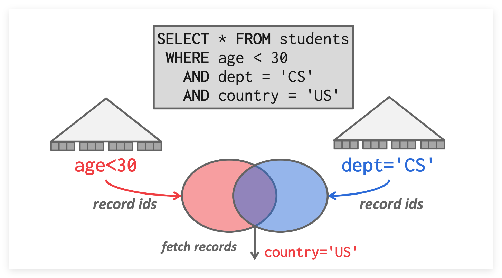

7. Query Execution¶
约 1568 个字 22 行代码 预计阅读时间 8 分钟
Sorting Algorithm¶
DBMS 需要对数据进行排序，因为 tuple 在关系模型下没有特定的顺序。排序可能用于 ORDER BY, GROUP BY, JOIN, DISTINCT 等运算符中。
如果需要排序的数据位于内存中，则可以直接使用标准的排序算法（如快速排序）；否则，可以使用 External Sort。
外部排序等算法及其优化相信各位都在算法课学过了
Aggregation Algorithm¶
Aggregation 运算将一组 tuple 折叠为单个标量。实现聚合的方式有排序和哈希两种：
- Sorting
- DBMS 首先对元组进行
GROUP BY排序，然后对其执行顺序扫描去计算聚合。 - 执行排序聚合时，一定要先执行筛选条件（如果有），再进行排序，以减少工作量
- DBMS 首先对元组进行
- Hashing
- 哈希的计算成本可能比排序低。DBMS 在扫描表时会填充一个临时哈希表，对于每条 record ，检查是否已经在 hash 表中，并进行相应修改。
- 如果哈希表太大而无法放入内存，则 DBMS 可以将其溢出到磁盘。
Joins Algorithm¶
一个好的数据库设计目标是最大限度减少信息重复，这也是为什么我们需要根据归一化理论组合 Table。
对于分别位于两个 Table 中，但是在 join 属性中匹配的两个 tuple，join 运算符将它们连接到一起形成一个新的输出元组。
实际上，join 运算符生成的输出元组的内容取决于 DBMS 的查询处理模型、存储模型以及查询操作本身。
具体的实现有以下几种：
- <1> Nested Loop Join
- 由两个嵌套的
for循环组成，分别迭代两个 Table 中的元组，并对其进行成对比较。外部for循环中的表称为外部表，内部for循环的称为内部表。
- 由两个嵌套的
- <2> Sort-Merge Join
- 先将两个表 Merge 排序，在扫描遍历找出匹配项。
- <3> Hash Join
- 哈希连接算法的思想是使用哈希表，根据 tuple 的
join属性将元组拆分为更小的块。
- 哈希连接算法的思想是使用哈希表，根据 tuple 的
| Algorithm | I/O Cost | Example |
|---|---|---|
| Simple Nested Loop Join | M+(m*N) | 1.4 hours |
| Block Nested Loop Join | M+(M*N) | 50 seconds |
| Index Nested Loop Join | M+(m*C) | Varies |
| Sort-Merge Join | M+N+(sort cost) | 0.75 seconds |
| Hash Join | 3*(M+N) | 0.45 seconds |
使用的变量
- 表 \(R\)（外表）中的 M 个 Pages，共 m 个 tuples
- 表 \(S\)（内表）中的 N 个 Pages，共 n 个 tuples
Query Processing¶
DBMS 将 SQL 语句转换为 Query Plan，查询计划中的运算以树状排列(一般是二叉树)，数据从叶子流向根，根节点的输出即为查询的结果。
例如，对于下面查询语句，转换的 Query Plan 为：
Processing Model¶
处理模型定义了系统如何执行 Query Plan，它指定了查询计划的评估方向以及传递的数据类型等。针对不同的工作负载，一般采用不同处理模型。
处理模型可以从上到下或从下到上调用 Operators，top-to-bottom 方法更为常见，但 bottom-to-top 能更好控制流水线
Iterator Model
迭代器模型，也被称为 Volcano 或 Pipeline 模型，是最常见的处理模型。
其工作原理是为数据库每个运算符实现一个 Next 函数。Query Plan 中的每个节点都会对其子节点调用 Next 迭代，直到到达叶节点，最后从叶节点开始将 tuple 发送到父节点进行处理。这在基于磁盘的数据库系统中是非常有效的。
{kind=link}
迭代器模型允许流水线，其中 DBMS 可以在必须检索下一个元组前用尽可能多的运算符来处理元组。
join,subqueries,order 等运算符在收到子节点返回的元组前会阻塞，它们被称为 Pipeline Breakers
对于 Output Control（如 LIMIT），一旦得到所需的所有 tuples，就可以停止调用 Next 了。
Materialization Model
物化模型是迭代器模型的一种特殊情况，每个 Operator 一次处理所有输入，处理完后将结果一次性输出。
{kind=link}
这种处理方式更适合 OLTP 工作负载，因为查询通常一次只访问少量元组，函数调用也就更少。而其不适合 OLAP 工作负载，因为中间的暂存结果可能会溢出到磁盘上，带来较大 I/O 开销。
Vectorization Model
与迭代器模型一样，矢量化模型也为每一个运算符实现一个 Next 函数，但是一次性处理 \(n\) 个数据。
n 的大小视硬件和查询属性而异
{kind=link}
矢量化模型方法非常适合必须扫描大量元组的 OLAP 工作负载，它对 Next 函数的调用次数较少。
Access Methods¶
访问方法是 DBMS 访问存储在 Table 中数据的方式，通常有 Sequential Scan 和 Index Scan 两种。
- Sequential Scan
- 维护一个内部游标，并且跟踪它访问的上一个 Page/Slot
- 顺序扫描一般是 DBMS 查询效率最低的操作，可以使用 Prefetching, Buffer Pool Bypass, Parallelization, Late Materialization, Heap Clustering, Approximate Queries, Zone Map 等策略进行优化
- Index Scan
- 例如，在对下面一个具有两个索引的表进行索引扫描，最好在扫描中选用
dept，因为选age的话还要扫描一遍age索引，不比顺序扫描快多少。 - 
- 当然，上图其实采用了多索引扫描，先将两个索引取出相应的 ID 集，然后取交集继续操作
- 例如，在对下面一个具有两个索引的表进行索引扫描，最好在扫描中选用
{kind=link}
Modification Queries & Expression Evalution¶
摆了，请看 Lecture 12: Query Execution I
Query Plan Optimization¶
对于同一个 SQL 查询语句，可以转换为具有不同性能的 Query Plan，为此人们设计了 Query Optimizer 选择最佳的查询计划。
查询优化器的第一个实现是 IBM System R，其许多概念和决策至今仍在使用
查询优化有两种高级策略：
- Static Rules, or Heuristics
- 将 Query Plan 和已知部分匹配，根据静态规则转换查询以保证起码不会低效。
- 这些静态规则可能需要查阅 index 并了解数据结构，但是不需要检查数据本身
- Cost-Based Search
- 使用成本模型来估计查询计划的成本，选择成本最低的 Query Plan
具体请看 https://15445.courses.cs.cmu.edu/fall2022/notes/14-optimization.pdf